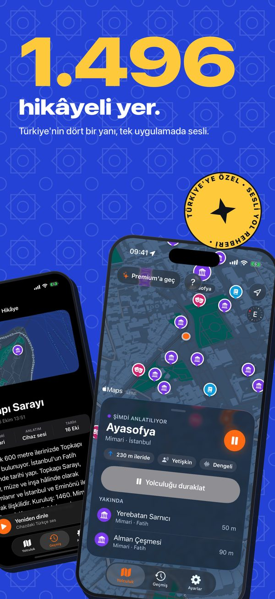
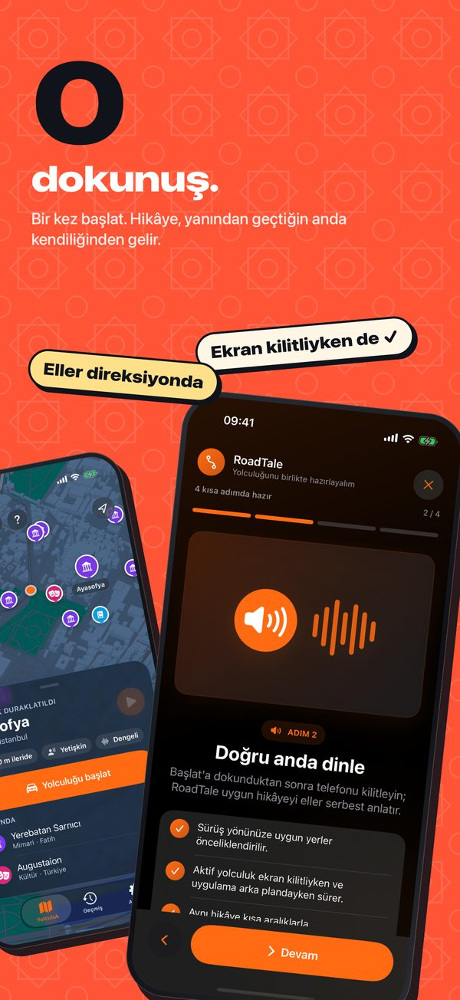
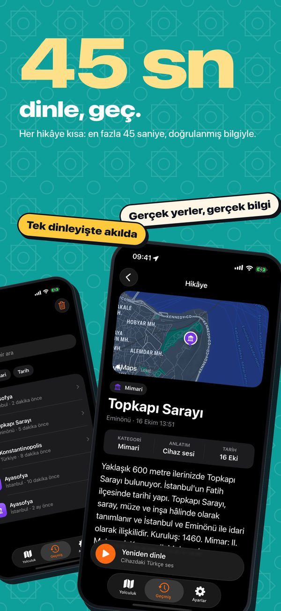
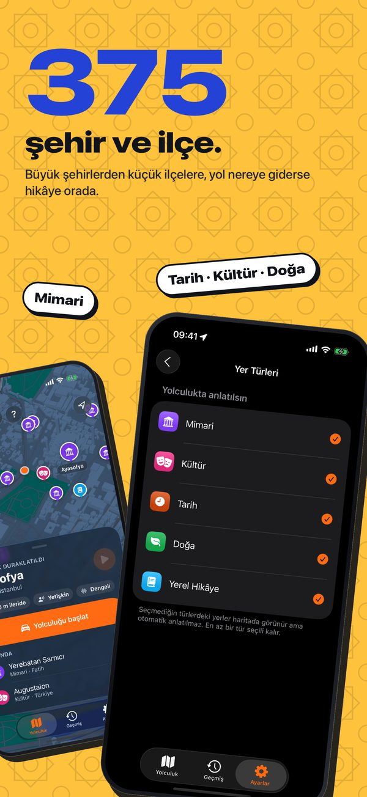
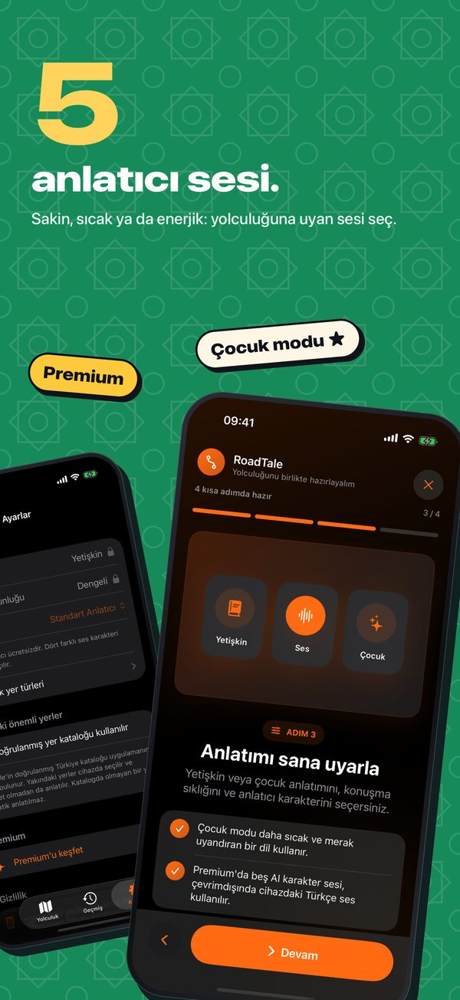
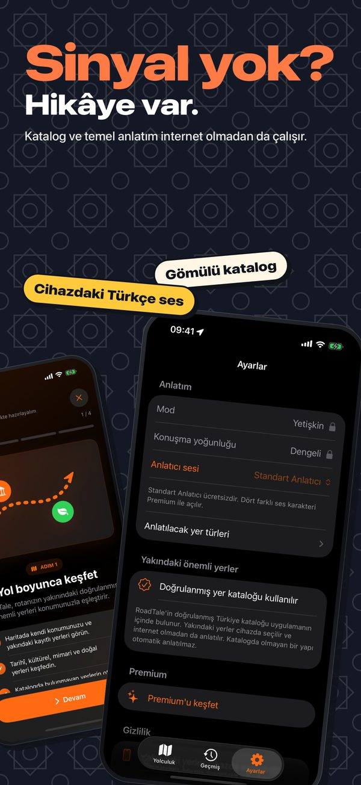
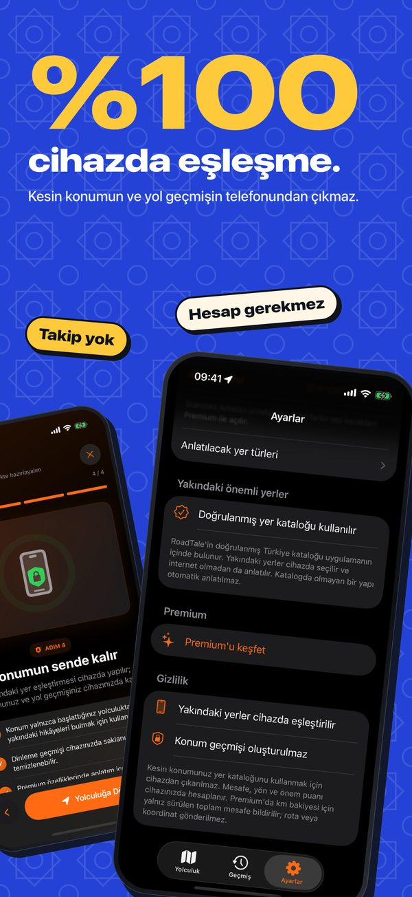
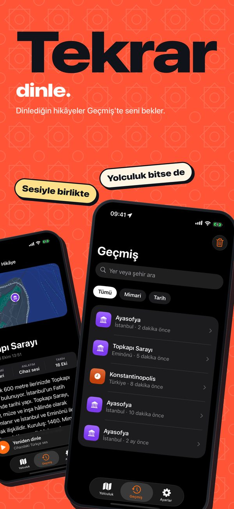

Doğru anda anlatır
Yakındaki yerleri mesafe, sürüş yönü ve önemine göre seçer; yolculuğu başlattıktan sonra ekrana bakman gerekmez.
Telefon cebindeyken Türkiye yolu anlatıyor. Yakındaki tarihî, kültürel ve doğal noktaların hikâyelerini doğru anda dinle.

Ekran görüntüleri








Yolculuk için tasarlandı
Yakındaki yerleri mesafe, sürüş yönü ve önemine göre seçer; yolculuğu başlattıktan sonra ekrana bakman gerekmez.
Türkiye genelindeki 1.496 yerleşik ilgi noktası ve temel cihaz sesi, bağlantı olmadığında da yolun hikâyesini sürdürür.
Premium; zengin yapay zekâ hikâyeleri, yetişkin ve çocuk modları ile beş farklı anlatıcı karakteri ekler. Tam konumun yapay zekâya gönderilmez.
Konum, yolculuk, sesli anlatım ve Premium hakkında yardım al.
Desteğe git →Konumun, geçmişin ve Premium isteklerinin nasıl işlendiğini öğren.
Politikayı oku →